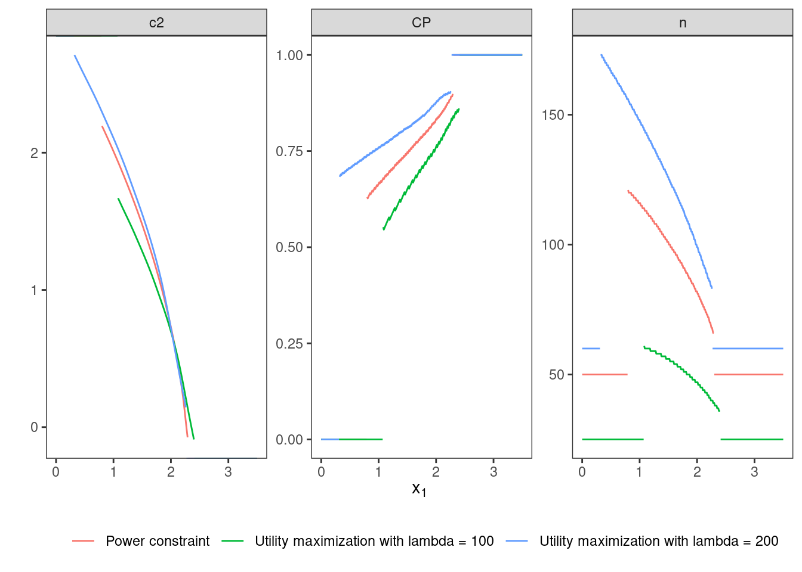
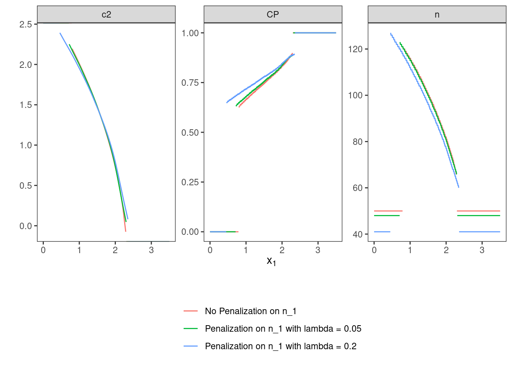
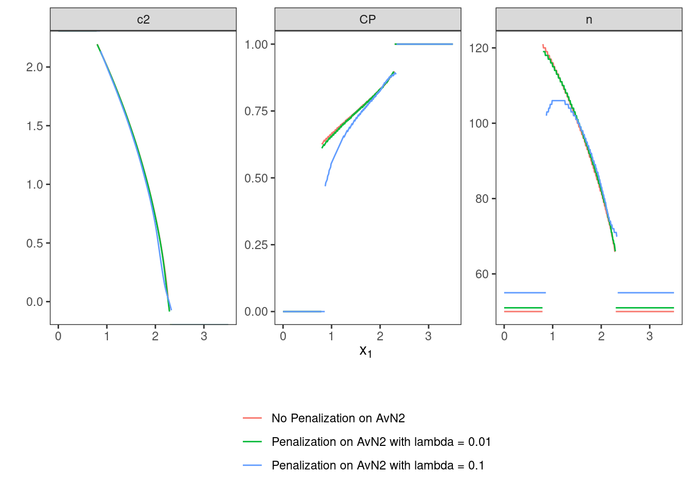

6 Scenario V: single-arm design, medium effect size
6.1 Details
In this scenario, again a point prior is analyzed. The null hypothesis is \(\delta \leq 0\) and we assume an alternative effect size of \(\delta = 0.3\). Type one error rate should be protected at 2.5% and the design’s power should be at least 80%. Differently than in the previous scenarios, we are assuming a single-arm design throughout this scenario.
6.2 Variant V-1, sensitivity to integration order
In this variant, the sensitivity of the optimization with respect to the integration order is investigated. We apply three different integration orders: 5, 8, and 11.
6.2.1 Objective
Expected sample size under the alternative point mass prior \(\delta = 0.3\) is minimized.
6.2.3 Initial Design
In order to vary the initial design, rpact is not used in this variant.
Instead, the following heuristical considerations are made.
A fixed design for these parameters would require
176
subjects per group. We use the half of this as initial values for the
sample sizes.
The initial stop for futility is at \(c_1^f=0\), i.e., if the effect shows
in the opponent direction to the alternative.
The starting values for the efficacy stop and for \(c_2\) is the \(1-\alpha\)-
quantile of the normal distribution.
init_design <- function(order) {
TwoStageDesign(
n1 = ceiling(pwr::pwr.t.test(d = .3,
sig.level = .025,
power = .8,
alternative = "greater")$n) / 2,
c1f = 0,
c1e = qnorm( 1 - 0.025),
n2 = ceiling(pwr::pwr.t.test(d = .3,
sig.level = .025,
power = .8,
alternative = "greater")$n) / 2,
c2 = qnorm(1 - 0.025),
order = order
)
}6.2.4 Optimization
The optimal design is computed for three different integration orders: 5, 8, and 11.
6.2.5 Test cases
Check if the optimization algorithm converged in all cases.
opt %>%
transmute(
order,
iterations = purrr::map_int(opt$design,
~.$nloptr_return$iterations) ) %>%
{print(.); .} %>%
{testthat::expect_true(all(.$iterations < opts$maxeval))}## # A tibble: 3 × 2
## order iterations
## <dbl> <int>
## 1 5 2372
## 2 8 5378
## 3 11 10689Test the constraints on type one error rate and power by simulation and
compare the results to the outcome of evaluate().
opt %>%
transmute(
order,
toer = map_dbl(design,
~evaluate(Power(datadist, PointMassPrior(.0, 1)), .$design) ),
toer_sim = map_dbl(opt$design,
~sim_pr_reject(.[[1]], .0, datadist)$prob),
power = map_dbl(design,
~evaluate(Power(datadist, PointMassPrior(.3, 1)), .$design) ),
power_sim = map_dbl(opt$design,
~sim_pr_reject(.[[1]], .3, datadist)$prob),
ess = map_dbl(design, ~evaluate(ess, .$design) ),
ess_sim = map_dbl(opt$design, ~sim_n(.[[1]], .3, datadist)$n)
) %>%
unnest(., cols = c(toer, toer_sim, power, power_sim)) %>%
{print(.); .} %>% {
testthat::expect_true(all(.$toer <= alpha * (1 + tol)))
testthat::expect_true(all(.$toer_sim <= alpha * (1 + tol)))
testthat::expect_true(all(.$power >= min_power * (1 - tol)))
testthat::expect_true(all(.$power_sim >= min_power * (1 - tol))) }## # A tibble: 3 × 7
## order toer toer_sim power power_sim ess ess_sim
## <dbl> <dbl> <dbl> <dbl> <dbl> <dbl> <dbl>
## 1 5 0.0250 0.0250 0.799 0.800 71.0 71.0
## 2 8 0.0250 0.0250 0.800 0.800 71.0 71.0
## 3 11 0.0250 0.0250 0.800 0.800 71.0 71.06.3 Variant V-2, utility maximization
6.3.1 Objective
In this variant, a utility function consisting of expected sample size and power is minimized. The parameter \(\lambda\) that is describing the ratio between expected sample size and power is varied.
6.3.2 Constraints
The type one error rate is controlled at 0.025 on the boundary of the null hypothesis. Hence, the previous inequality can still be used. There is no constraint on power any more because power is part of the objective utility function.
6.3.5 Test cases
Firstly, it is checked whether the maximum number of iterations was not exceeded in both flavours.
opt_utility %>%
transmute(
lambda,
iterations = purrr::map_int(opt_utility$design,
~.$nloptr_return$iterations) ) %>%
{print(.); .} %>%
{testthat::expect_true(all(.$iterations < opts$maxeval))}## # A tibble: 2 × 2
## lambda iterations
## <dbl> <int>
## 1 100 3338
## 2 200 3154Type one error rate control is tested for both designs by simulation and by
adoptr’s function evaluate.
In addition, it is tested if the design with larger \(\lambda\) (i.e.,
stronger focus on power), shows the larger overall power.
opt_utility %>%
transmute(
lambda,
toer = map_dbl(design,
~evaluate(Power(datadist, PointMassPrior(.0, 1)), .$design) ),
toer_sim = purrr::map(opt_utility$design,
~sim_pr_reject(.[[1]], .0, datadist)$prob),
power = map_dbl(design,
~evaluate(Power(datadist, PointMassPrior(.3, 1)), .$design) ),
power_sim = purrr::map(opt_utility$design,
~sim_pr_reject(.[[1]], .3, datadist)$prob) ) %>%
unnest(., c(toer, toer_sim, power, power_sim)) %>%
{print(.); .} %>% {
testthat::expect_true(all(.$toer <= alpha * (1 + tol)))
testthat::expect_true(all(.$toer_sim <= alpha * (1 + tol)))
testthat::expect_lte(.$power[1], .$power[2]) }## # A tibble: 2 × 5
## lambda toer toer_sim power power_sim
## <dbl> <dbl> <dbl> <dbl> <dbl>
## 1 100 0.0250 0.0250 0.519 0.520
## 2 200 0.0251 0.0250 0.897 0.897Finally, the three designs computed so far are plotted together to allow comparison.

6.4 Variant V-3, n1-penalty
In this variant, the influence of the regularization term N1() is investigated.
6.4.1 Objective
In order to analyse the influence of N1(),
a mixed criterion consisting of expected sample size under the point prior
and \(N1()\) is minimized.
6.4.2 Constraints
The inequalities from variant V.1 can still be used.
6.4.3 Initial Design
The previous initial design with order \(5\) is applied. This variant requires an upper bound on \(c_2\). Otherwise, very large values for \(c_2\) and large \(n_2\)-values would allow appear to reduce \(n_1\).
6.4.5 Test cases
We start testing if the optimization algorithm converged in both cases
opt_n1 %>%
transmute(
lambda,
iterations = purrr::map_int(opt_n1$design,
~.$nloptr_return$iterations) ) %>%
{print(.); .} %>%
{testthat::expect_true(all(.$iterations < opts$maxeval))}## # A tibble: 2 × 2
## lambda iterations
## <dbl> <int>
## 1 0.05 3133
## 2 0.2 2921Next, the error rate constraints on type one error rate and power are both
tested by simulation and by the evaluate-call.
opt_n1 %>%
transmute(
lambda,
toer = map_dbl(design,
~evaluate(Power(datadist, PointMassPrior(.0, 1)), .$design) ),
toer_sim = purrr::map(opt_n1$design,
~sim_pr_reject(.[[1]], .0, datadist)$prob),
power = map_dbl(design,
~evaluate(Power(datadist, PointMassPrior(.3, 1)), .$design) ),
power_sim = purrr::map(opt_n1$design,
~sim_pr_reject(.[[1]], .3, datadist)$prob) ) %>%
unnest(., cols = c(toer, toer_sim, power, power_sim)) %>%
{print(.); .} %>% {
testthat::expect_true(all(.$toer <= alpha * (1 + tol)))
testthat::expect_true(all(.$toer_sim <= alpha * (1 + tol)))
testthat::expect_true(all(.$power >= min_power * (1 - tol)))
testthat::expect_true(all(.$power_sim >= min_power * (1 - tol))) }## # A tibble: 2 × 5
## lambda toer toer_sim power power_sim
## <dbl> <dbl> <dbl> <dbl> <dbl>
## 1 0.05 0.0250 0.0250 0.801 0.801
## 2 0.2 0.0250 0.0250 0.800 0.800Since \(n_1\) is penalized in both flavours that are computed in this variant, we expect a lower \(n_1\) value as larger \(\lambda\). Furthermore, \(n_1\) should be lower in both cases than in the unpenalized situation regarded in variant V.1. Finally, these three designs are plotted together to allow graphical comparison.
## # A tibble: 3 × 3
## type design n_1
## <chr> <list> <dbl>
## 1 No Penalization on n_1 <TwStgDsg> 50
## 2 Penalization on n_1 with lambda = 0.05 <TwStgDsg> 48
## 3 Penalization on n_1 with lambda = 0.2 <TwStgDsg> 41
6.5 Variant V-4, n2-penalty
Here, we alter the situation from variant V.3 by not penalizing
\(n_1\), but the average stage-two sample size \(n_2\).
This can be done by means of the function AverageN2().
6.5.1 Objective
As in variant V.3, a mixed criterion is minimized. Here, it consists of expected sample size under the point prior and the average of \(n_2\).
6.5.2 Constraints
The inequalities from variant V.1 can still be used.
6.5.3 Initial Design
The previous initial design with order \(8\) is applied. However, this case requires the definition of an upper-bound for \(c_2\). Otherwise, very small \(n_2\)-values and very large \(c_2\)-values would appear close to the early-futility-stop boundary in order to decrease the average \(n_2\).
6.5.5 Test cases
As first step, we check if the maximum number of iterations was not exceeded in both cases.
opt_n2 %>%
transmute(
lambda,
iterations = purrr::map_int(opt_n2$design,
~.$nloptr_return$iterations) ) %>%
{print(.); .} %>%
{testthat::expect_true(all(.$iterations < opts$maxeval))}## # A tibble: 2 × 2
## lambda iterations
## <dbl> <int>
## 1 0.01 18398
## 2 0.1 11123As second step, the type one error rate and power restrictions are tested
by simulation and by calling evaluate.
opt_n2 %>%
transmute(
lambda,
toer = map_dbl(design,
~evaluate(Power(datadist, PointMassPrior(.0, 1)), .$design) ),
toer_sim = purrr::map(opt_n2$design,
~sim_pr_reject(.[[1]], .0, datadist)$prob),
power = map_dbl(design,
~evaluate(Power(datadist, PointMassPrior(.3, 1)), .$design) ),
power_sim = purrr::map(opt_n2$design,
~sim_pr_reject(.[[1]], .3, datadist)$prob) ) %>%
unnest(., c(toer, toer_sim, power, power_sim)) %>%
{print(.); .} %>% {
testthat::expect_true(all(.$toer <= alpha * (1 + tol)))
testthat::expect_true(all(.$toer_sim <= alpha * (1 + tol)))
testthat::expect_true(all(.$power >= min_power * (1 - tol)))
testthat::expect_true(all(.$power_sim >= min_power * (1 - tol))) }## # A tibble: 2 × 5
## lambda toer toer_sim power power_sim
## <dbl> <dbl> <dbl> <dbl> <dbl>
## 1 0.01 0.0250 0.0249 0.802 0.802
## 2 0.1 0.0250 0.0250 0.801 0.801Due to increasing penalization, it is assumed that the optimal design computed in variant V.1 (no penalization) shows a larger average \(n_2\) than the optimal penalized design with \(\lambda = 0.01\) and this shows a larger average \(n_2\) than the optimal design with \(\lambda = 0.1\). Additionally, these three designs are depicted in a joint plot.
## # A tibble: 3 × 3
## type design average_n2
## <chr> <list> <dbl>
## 1 No Penalization on AvN2 <TwStgDsg> 47.6
## 2 Penalization on AvN2 with lambda = 0.01 <TwStgDsg> 46.6
## 3 Penalization on AvN2 with lambda = 0.1 <TwStgDsg> 38.9